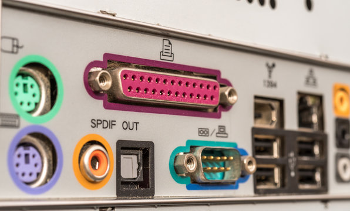

Analisis de Problemas
Sintoma: Dispositivos USB o de Audio no reconocidos / Fallas intermitentes
Los dispositivos conectados a puertos USB (mouse, teclado, memorias, impresoras) no funcionan o se desconectan aleatoriamente. El audio no se escucha o los microfonos no funcionan a traves de los puertos de audio (jack 3.5mm).
Soluciones y Recomendaciones:
- Probar en Otro Puerto: Conecta el dispositivo a otro puerto USB o de audio para descartar que sea un problema del puerto especofico.
- Reiniciar la PC: A veces, un simple reinicio puede resolver problemas temporales de reconocimiento de hardware.
- Reinstalar Drivers: Abre el **Administrador de Dispositivos**, expande "Controladoras de bus serie universal" o "Entradas y salidas de audio", busca los dispositivos con problemas, haz clic derecho y selecciona "Desinstalar dispositivo". Luego reinicia la PC.
- Actualizar Drivers de Chipset: Visita el sitio web del fabricante de tu placa madre y descarga los ultimos drivers para el chipset, USB y/o audio.
- Inspeccion Visual: Busca pines doblados, suciedad o datos fisicos dentro del puerto.
Sintoma: Problemas de Conexion a Internet (Ethernet, Wi-Fi)
No hay conexion a internet a traves del cable Ethernet, la conexion Wi-Fi es intermitente o no detecta redes, o la velocidad es anormalmente baja.
Soluciones y Recomendaciones:
- Verificar Cables y Router: Asegurate de que el cable Ethernet esta bien conectado en ambos extremos y que tu router/modem esta funcionando correctamente. Reinicia el router.
- Diagnostico de Red de Windows: Utiliza el solucionador de problemas de red integrado de Windows (clic derecho en el icono de red en la barra de tareas).
- Actualizar Drivers de Adaptador: En el **Administrador de Dispositivos**, expande "Adaptadores de red", busca tu tarjeta Ethernet o Wi-Fi, y actualiza los drivers desde el sitio web del fabricante (Intel, Realtek, etc.).
- Restablecer Red: En Windows, ve a Configuracion > Red e Internet > Estado > Restablecimiento de red. Esto reinstalara los adaptadores de red.
- Probar con Otro Cable/Adaptador USB: Si es posible, prueba con un cable Ethernet diferente o un adaptador Wi-Fi USB para descartar una falla del puerto o la tarjeta de red integrada.
Sintoma: Fallas en Puertos de Video (HDMI, DisplayPort, DVI, VGA)
El monitor no recibe señal, la imagen tiene colores incorrectos, parpadea o presenta resolucion incorrecta al usar una conexion de video especifica.
Soluciones y Recomendaciones:
- Verificar Cable de Video: Prueba con un cable de video diferente y asegurate de que este firmemente conectado tanto al PC/GPU como al monitor.
- Probar con Otra Salida: Conecta el monitor a otra salida de video disponible en tu tarjeta grafica o a los puertos de video integrados de la placa madre (si tu CPU tiene graficos integrados).
- Actualizar Drivers de Graficos: Los drivers de la tarjeta grafica (NVIDIA, AMD) o los graficos integrados (Intel) son cruciales. Asegurate de tener la ultima version instalada.
- Revisar Configuracion del Monitor: Asegurate de que el monitor esta configurado en la entrada correcta (HDMI1, DisplayPort, etc.).
- Inspeccion Fisica: Busca pines doblados o datos en el puerto de video tanto en el PC como en el monitor.